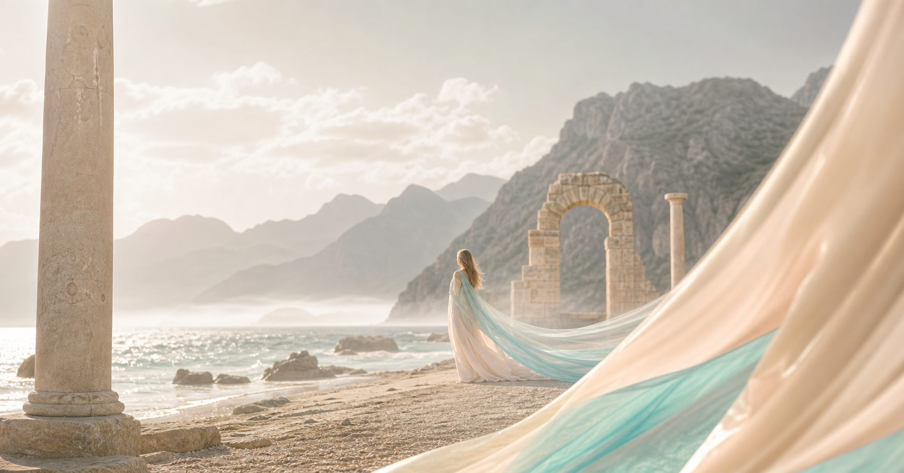
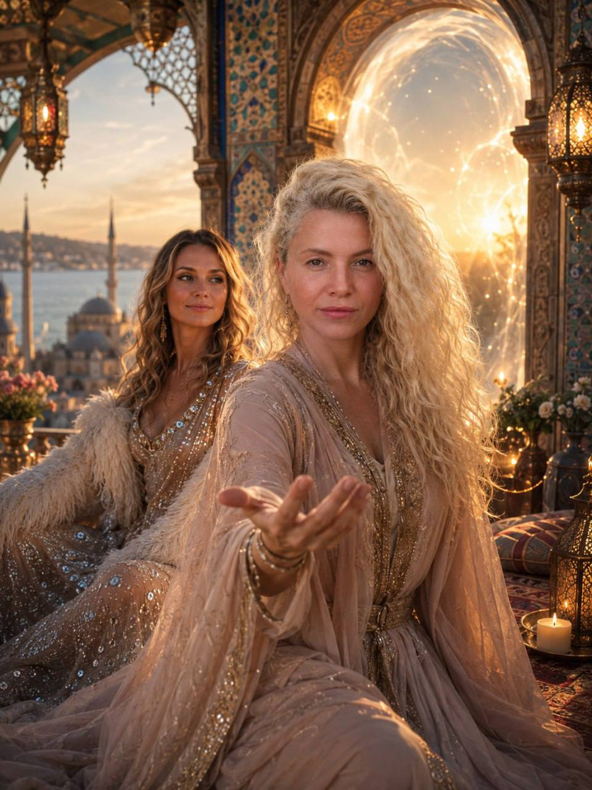
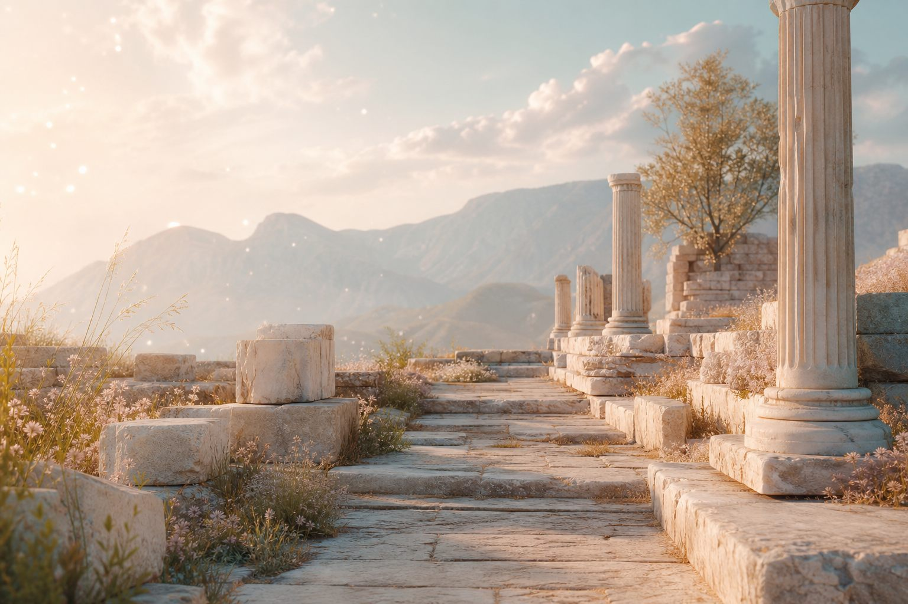
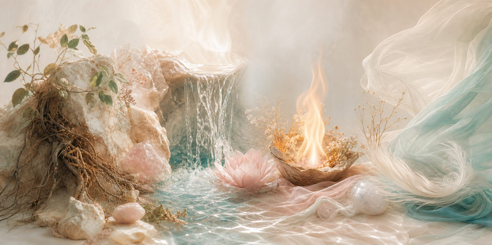
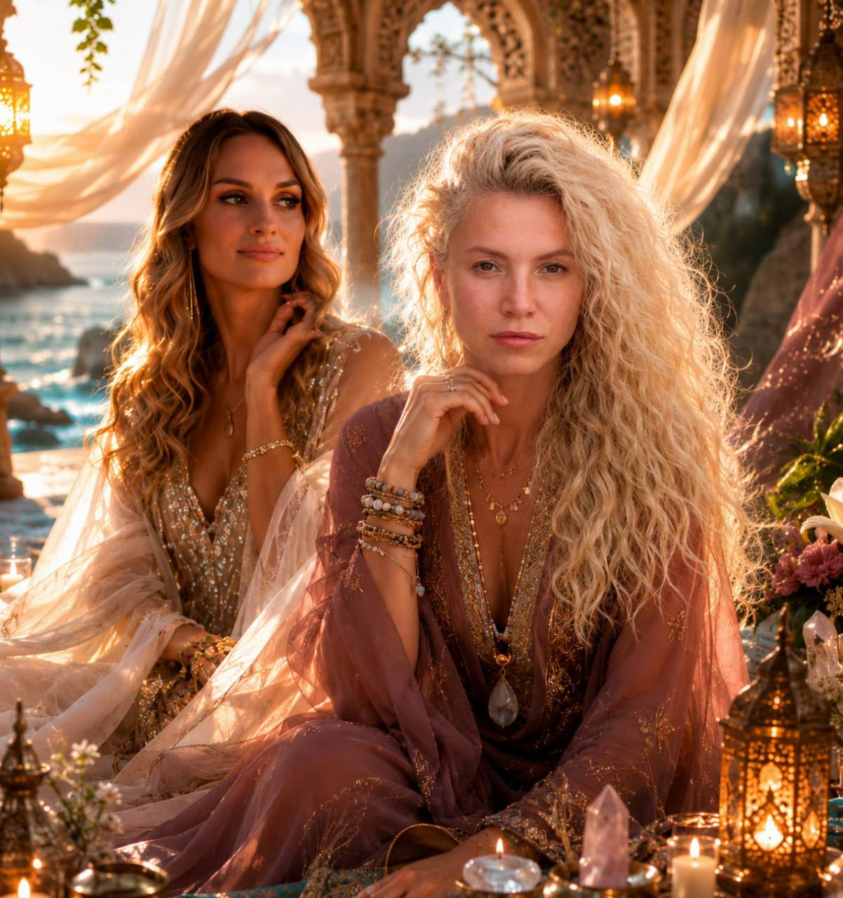
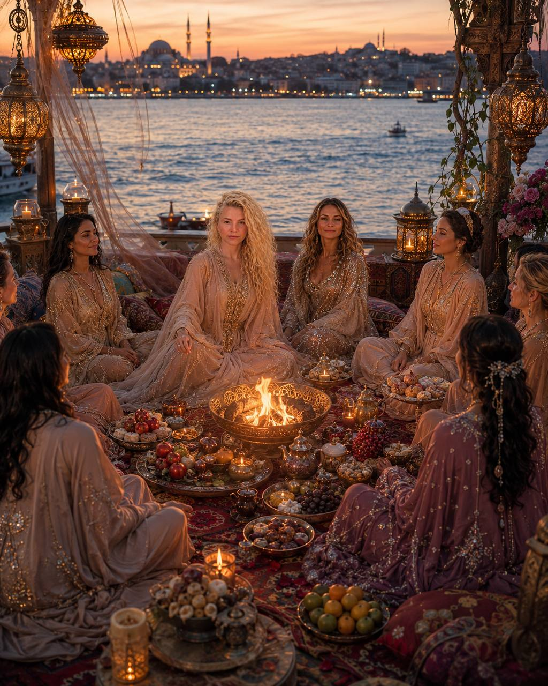

Земля
Возвращаем телу опору, корни, устойчивость и право занимать свое место.
19-27 сентября • Турция
9 дней сакрального перехода
Я приглашаю тебя в экспедицию-посвящение по древней земле Анатолии, где горы Тавра встречаются со Средиземным морем, а тело снова вспоминает свой источник, опору и женскую силу.

не просто путешествие
Есть путешествия, в которые едут не за отдыхом. В них входят, когда внутри уже созрело: пора собрать себя, вернуть силу, которую ты раздавала частями, и снова услышать свою природу.
Это путь не к новой роли, а к той женщине, которая была внутри всегда: чувствующей, зрелой, живой, способной выбирать, любить, защищать, творить и открывать новое.


древняя Анатолия
Мы пройдем через древние храмы, природные святилища, воду, камень, огонь, дыхание, тишину и женский круг. Каждое место станет не экскурсионной точкой, а порогом, где можно услышать то, что давно звучало внутри.
Осеннее равноденствие даст этому пути особую точность: время урожая, баланса и сбора плодов того, что уже было прожито.
стихии пути
В каждом дне будет мистика места и телесная основа: нервная система, дыхание, опора, безопасность и живое состояние женщины.

Возвращаем телу опору, корни, устойчивость и право занимать свое место.
Отпускаем лишнее, проходим переходы, возвращаем мягкость и доверие.
Пробуждаем внутреннюю жрицу, ясность, силу выбора и желание жить.
Открываем дыхание, пространство, видение и новый маршрут.
программа
Каждый день — отдельная ступень. Каждое место — дверь. Каждая практика — шаг через порог к себе, своему телу, своим дарам и внутреннему источнику.
Прибытие, сбор круга, открытие поля. Я пришла. Я слышу зов.
Работа в зале и сакральная баня. Освобождаю место для своей силы.
Храм Геи и Сагалассос. Опора, корни, телесная память Матери-Земли.
Река, переезд в Чиралы, Фазелис. Внутреннее разрешение двигаться.
Интеграция, хамам и мягкое принятие того, что уже открылось.
Олимпус. Границы, достоинство и спокойная внутренняя власть быть собой.
Возвращение к источнику и праву проявлять то, что давно ждало выхода.
Гора Химера до рассвета. Вечное пламя, ясность и сила выбора.
Финальный круг, сбор ключей и возвращение с внутренним знанием: я прошла.
проводницы
Этот путь будем вести мы с Людмилой. Не за собой, а в поле, где можно услышать себя без давления и ожиданий: через бережное сопровождение, женскую связь, телесную практику и живое присутствие.
Для той, кто устала быть удобной. Для той, кто слишком долго держала все сама. Для той, кто чувствует: пора переходить.


если есть отклик
Если внутри отзывается этот путь, напиши мне. Я пришлю детали экспедиции, формат участия и отвечу на вопросы, чтобы ты могла почувствовать: твое это пространство сейчас или нет.
Обсудить участие